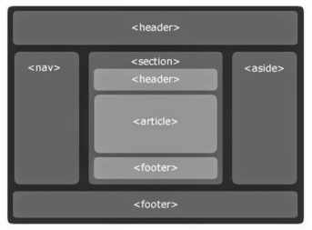

Введение
Информационные технологии (ИТ) стали неотъемлемой частью современного мира. Они играют ключевую роль в различных сферах деятельности, от обучения до бизнеса. В последние годы наблюдается стремительный рост развития ИТ. Это связано с рядом факторов, включая:
- Увеличение вычислительной мощности и скорости передачи данных;
- Появление новых технологий, таких как искусственный интеллект, машинное обучение и блокчейн;
- Растущая потребность в автоматизации и оптимизации процессов.
В результате ИТ становятся все более мощными, гибкими и доступными. Это приводит к их широкому распространению и использованию в различных сферах жизни.
Цифровая экономика — это экономика, основанная на использовании цифровых технологий. Она характеризуется широким распространением цифровых технологий во всех сферах экономики. Тренды на цифровизацию всех значимых процессов, указывают на то, что цифровая экономика становится все более важной для развития общества. ИТ играют ключевую роль в развитии цифровой экономики. Они обеспечивают основу для цифровизации различных процессов, включая:
- Сбор и хранение данных;
- Обработка и анализ данных;
- Коммуникация и взаимодействие между людьми и системами;
- Автоматизация и управление.
Индустрия 4.0 — это концепция, которая описывает четвертую промышленную революцию. Она характеризуется широким использованием цифровых технологий в производстве, включая:
- Индустриальный интернет вещей (IIoT);
- Искусственный интеллект (ИИ);
- Машинное обучение (ML);
- Блокчейн.
Эти технологии позволяют предприятиям повысить эффективность производства, улучшить качество продукции и услуг, а также снизить затраты.
Web 3.0 - Эволюция Интернета
Web 3.0 — это новая версия Всемирной паутины, которая основана на децентрализованных технологиях, таких как блокчейн. Ключевые технологические тренды Web 3.0 включают:
- Децентрализованные приложения (DApps) — это приложения, которые работают на децентрализованных платформах, таких как блокчейн. DApps не контролируются какой-либо одной организацией и обеспечивают пользователям более высокий уровень контроля над своими данными и действиями.
- Умные контракты — это компьютерные программы, которые выполняются автоматически при выполнении определенных условий. Умные контракты позволяют автоматизировать транзакции и процессы, что делает их более эффективными и безопасными.
- Распределенная база данных — это база данных, которая хранится на нескольких компьютерах в сети. Распределенные базы данных более устойчивы к сбоям и атакам, чем централизованные базы данных.
- Распределенная идентификация — это система, которая позволяет пользователям идентифицировать себя в сети без необходимости доверять какой-либо одной организации. Распределенная идентификация обеспечивает более высокий уровень конфиденциальности и безопасности.
Эти технологии позволяют создать более открытую, прозрачную и безопаснуюсеть.
Семантическая Паутина - Язык для Компьютеров
Web 3.0 стремится к более четкому пониманию смысла данных, благодаря использованию семантических технологий. Это означает, что компьютеры и программы способны анализировать контент, распознавать связи между ними и предоставлять более точные и релевантные результаты поиска.
Семантическая паутина – это попытка сделать всю информацию в сети машиночитаемой. Сама идея semantic web довольно старая, ее сформулировал сам Бернес-Ли еще в 1994 году. Изначально это предполагалось делать прямым методом – через формальные метаописания, нечто вроде известного веб-разработчикам тега description, когда каждый текст сопровождается пояснением для поисковой машины: о чем он, кто автор и так далее.
Необходимость semantic web связана с тем, что принцип user-generate породил море контента, но большая его часть «мусорная» – бессодержательная, дублирующая или фейковая. Это приводит к чудовищно низкому информационному КПД Web 2.0, в котором есть все, кроме того, что в данный момент нужно пользователю. Semantic web планировался как способ структурировать этот океан сетевого мусора, но буквально сразу стало очевидно, что прямой метод metadescription не работает, потому что завязан на добросовестность описания. Отчего-то никто не горел желанием описать свой текст как «рерайченный из нескольких источников».
Семантическая верстка помогает создать более понятное и смысловое взаимодействие между данными и программами, что в свою очередь содействует более точной обработке контента, автоматизации задач. Она включает в себя следующие аспекты:
- Смысловая разметка. Семантическая верстка включает использование HTML-тегов согласно их предназначению. Например, использование тегов header, nav, article, section, footer и т.д. позволяет компьютерам понимать структуру и взаимосвязи внутри веб-страницы.
- Логическая структура. Код веб-страницы организуется с учетом логической структуры контента. Это помогает не только улучшить доступность для пользователей с ограниченными возможностями, но и облегчает анализ и понимание информации компьютерами.
- Микроформаты и RDFa. Семантическая верстка может включать использование микроформатов и RDFa (Resource Description Framework in Attributes), что добавляет дополнительные метаданные к элементам контента. Эти метаданные помогают машинам понимать, какую информацию представляют различные части страницы.
- Семантическая связь. Применение семантической верстки позволяет устанавливать связи между различными элементами контента. Например, указание на авторство, временные метки или категории могут помочь компьютерам более точно интерпретировать и оценивать информацию.
- Улучшенные результаты поиска. Когда веб-страницы имеют правильно оформленную семантику, поисковые системы могут более точно понимать и анализировать контент. Это ведет к более релевантным и точным результатам поиска для пользователей.
Влияние на Верстку Веб-Страниц
Децентрализация, введенная Web 3.0, требует от разработчиков переосмысления структуры и дизайна веб-страниц. Блокчейн, как основа децентрализованных технологий, вносит изменения в модель взаимодействия пользователей с контентом. Технологии, такие как IPFS (межпланетная файловая система), предоставляют децентрализованное хранение файлов, что влияет на обычные методы загрузки и представления контента.
Семантическая верстка становится ключевым элементом адаптации к новым требованиям Web 3.0. Эффективное использование онтологий и RDF в верстке не только улучшает восприятие контента поисковыми системами, но и позволяет интеллектуальным агентам более точно понимать структуру веб-страниц. Это обеспечивает более качественное взаимодействие пользователя с информацией и повышает уровень персонализации.
С появлением Web 3.0 и семантической паутины, а также увеличением числа устройств и разрешений экранов, адаптивная верстка становится неотъемлемой частью процесса разработки веб-страниц. Гибкая и адаптивная верстка обеспечивает оптимальное отображение контента на различных устройствах и экранах, что является важным аспектом в среде, где пользователи имеют доступ к интернету через разнообразные устройства.
Будущее Web 3.0 и верстки
С развитием технологий блокчейна и распространением децентрализованных приложений (DApps), верстка веб-страниц подвергается значительным изменениям. Традиционные методы разработки интерфейсов уступают место более гибким и децентрализованным подходам. Разработчики сталкиваются с задачей создания интерфейсов, которые могут взаимодействовать с различными блокчейн-платформами. Главными требованиями становятся универсальность и поддержка разнообразных криптовалют.
С развитием семантических технологий верстка становится более интуитивной и эффективной. Моделирование знаний и использование онтологий сокращают пространство для ошибок в интерпретации контента. Однако, процесс улучшения продолжается. Алгоритмы понимания смысла данных постоянно совершенствуются, что открывает новые горизонты для создания более точных и интеллектуальных веб-интерфейсов.
Интеграция искусственного интеллекта (ИИ) в верстку веб-страниц - неизбежный шаг в эпоху Web 3.0. Алгоритмы машинного обучения способны оптимизировать процессы верстки, предсказывать предпочтения пользователей и создавать более персонализированные интерфейсы. Взаимодействие с ИИ требует от разработчиков адаптации к новым методам и понимания, как объединить творческий подход с технологическими возможностями.
Выводы
Web 3.0 и семантическая паутина представляют собой прогрессивные концепции, которые не только меняют лицо интернета, но и оказывают значительное влияние на процессы верстки веб-страниц. Были пройдены ключевые аспекты этих концепций, рассмотрены их воздействие на технологический ландшафт и оценили, как они переписывают правила игры в веб-разработке.
Одной из важнейших тенденций Web 3.0 является децентрализация. Технологии блокчейна выходят за рамки криптовалют и начинают проникать в сферы различных веб-приложений. Это означает, что разработчики должны пересмотреть свои методы верстки, учитывая не только улучшение производительности, но и обеспечение безопасности и целостности данных.
Семантическая паутина, в свою очередь, открывает новые горизонты для восприятия и обработки информации. Онтологии и интеллектуальные агенты становятся неотъемлемой частью веб-разработки, требуя от нас более глубокого понимания структуры данных и их взаимосвязей. Семантическая верстка не только делает контент более понятным для компьютеров, но и открывает новые возможности для улучшения пользовательского опыта.
Адаптивность и гибкость в верстке становятся ключевыми качествами в новой эре интернета. С разнообразием устройств и децентрализованных сред, верстка должна быть способной адаптироваться к различным контекстам использования. Это вызывает необходимость в развитии технологий адаптивной верстки и создании интерфейсов, которые могут эффективно взаимодействовать с разнообразными платформами и устройствами.
Будущее Web 3.0 и верстки обещает увлекательные изменения. Расширение возможностей децентрализованных приложений, улучшение семантической верстки и интеграция искусственного интеллекта в процессы разработки - все это только начало. Разработчики должны готовиться к постоянному обновлению и обучению, чтобы быть в курсе последних технологических тенденций.